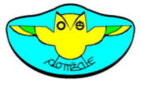

layout: true background-image: url(backgroun.jpg) background-size: cover --- class: center, middle <!--komentar--> # Naslov ??? Dodamo oporne točke. <!--nov slide--> --- class: top, left # Remark Remark je orodje za bla bla bla... -- več možnosti, ki jih ponuja Remark lahko preberemo: - na [modelni predstavitiv](https://remarkjs.com/#1) - na [projektni spletni strani](https://github.com/gnab/remark?tab=readme-ov-file) .center[] --- # Introduction